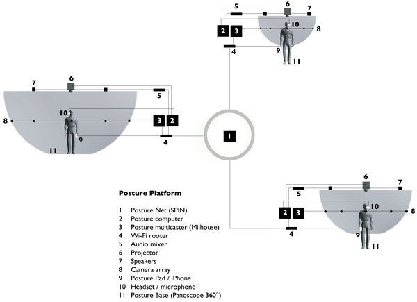
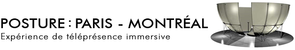

The Posture Platform is a collaborative project between SPIN developers and Luc Courchesne based at the Société des arts technologiques [SAT]. Below is a video that explains the general concept behind the project. More information can be found on the Posture website.
Below is a diagram that illustrates the components of a Posture-based network:

Exhibitions / Events / Installations:
McLuhan’s Massage Parlor
Toronto's Nuit Blanche 2011 Inspired by McLuhan’s books “The Medium is the Massage” and “Counterblast”, this immersive and participatory installation celebrates McLuhan’s insights in a medium he could only dream about.To be presented as part of Nuit Blance, Toronto. Follow the MEDIA McLUHAN development blog for more information. |
Posture: Paris - Montreal (release)
Two locations: La SAT (Montréal) and la Musée des arts et métiers du CNAM, Paris. |
You Are Here (www.youarehere2011.info)
Commissioned installation for the BMO Corporate Art Collection)
Articles about You Are Here: |
Where Are You?
Mediation Biennale Poznan 2010 (Poland), Cultural Centrum Zamek |
Where Are You?
Outer Body / Inner Experiences, Wood Street Galleries, Pittsburgh, PA |
Immersion, setting sun (after Monet)
Cinémathèque québécoise (Montreal) in collabortion with the Elektra festival |
Where are you? (release)
Part of CODE, the digital edition of Vancouver’s 2010 Cultural Olympiad |
Other Media:
Short documentary (in French), with footage from the exhibition "Immersion, setting sun (after Monet)", which was displayed at the Cinémathèque québécoise (Montreal) in collabortion with the Elektra festival (6 May - 27 June 2010):
Excerpt from a TV broadcast in French on Radio-Canada (06/12/2009) presenting recent works by Luc Courchesne on immersion and telepresence. -- Extrait d'un reportage préparé par le journaliste Daniel Carrière et le réalisateur Pierre Tonietto (émission Découvertes, Radio-Canada, 06/12/2009) où sont présentés les travaux récents de Luc Courchesne sur la projection immersive et la téléprésence.
Credits:
Posture Platform:
Concept, design, scenario, direction, production, photography, soundscape: Luc COURCHESNE
System architecture (SPIN): Mike WOZNIEWSKI
Network administrator: Simon PIETTE
Camera array development: Daniel LABONTÉ
Video capture and streaming (Milhouse): Tristan MATTHEWS
Additional programming: Alexandre QUESSY, Gideon MAY
iPhone development and web design: Samuel VERMETTE
3D modelling David DUGUAY
Assistance and coordination: Audrey DESJARDINS
Philosopher in residence: Christoph BRUNNER
Designer in residence: Marilyn TEUWEN
Project created in collaboration with Society for Arts and Technology (SAT) with support from Université de Montréal and the Social Sciences and Humanities Research Council (Canada). Thanks to Monique SAVOIE, Ghyslain BOILEAU, Brian MASSUMI and Philippe DUBÉ.
Panoscope 360°:
Concept, design, prototyping, production: Luc COURCHESNE
Additional design and fabrication: Sébastien DALLAIRE / SAT
Optical design: Simon THIBAUT / Immervision
Projector: Projection design
Immersive viewer: Gideon MAY